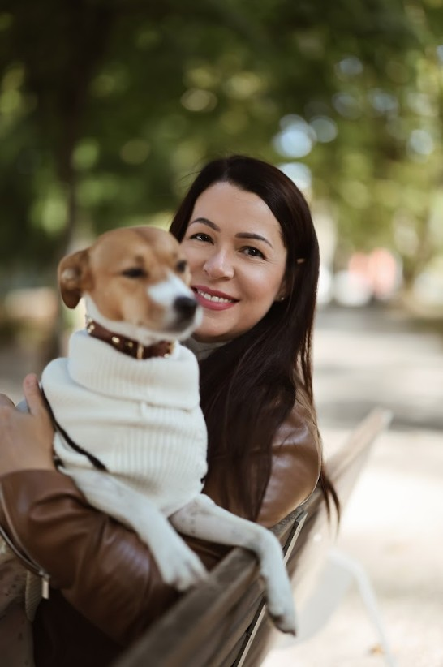

Hello, this is Posie.
I am Kriszta, and Posie is my love brand. I live and create in the beautiful city of Budapest.
What does a posie mean you may ask? Well, it is a lush bouquet of flowers, given because someone was truly on your mind. That is the heartbeat behind everything I create.
I have always loved combining creative self-expression with interior design and truly unique pieces. This passion is how Posie was born.
Alongside smaller tokens of affection, I deeply enjoy creating larger, statement pieces for unique home decor. These magnificent floral centerpieces and candle wreaths are designed to be the stunning crowning glory of a wedding table, a family celebration, or simply a source of everyday luxury that brings magic to the home and festive spaces.
If you would like to explore more of my previous work and go behind the scenes of my creative journey, I warmly invite you to follow along on my Instagram and Pinterest pages.
Thank you for being here.
